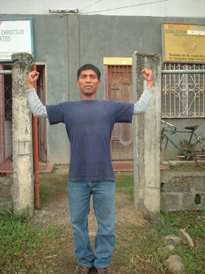

keseg 
/kɔsɔg/
n.
strength
Ka seini ne lalag iyan sika se kanekal ta wey ka me uhat te tibuuk lawa ta.
Mamasakit ka me keseg ku te egpanakeru.
My muscles are aching from fetching water.
Eng. strength; force
Ceb. kaugatan
Online dict status: -
Usage level: M
n.
muscle
Eng. muscle
Online dict status: -
Usage level: M
adj.
(makeseg, mA1-) strong or well
Makeseg ne etew si Samsun su indumaan ma sikandin te Manama.
Samson is a strong person because God is with him.
Syn. manekal
Eng. strong (about strength); muscular; powerful; well; heavy (for rain)
DDP: Strong (2.4.1)
Online dict status: -
Usage level: M
adj.
(makeseg-keseg, mA1-rdpRT-) healthy
Makeseg-keseg ne etew si Punges su iyan din dè egpulunganan ka egpangenat te mabbehat.
Punges is healthy man for he always used to carry heavy loads.
Eng. healthy
DDP: Healthy (2.5)
Online dict status: -
Usage level: R
v.
for someone (egpakeseg, migpakeseg/impakeseg, agent, egpA-) to expand their muscles or to strengthen the group by something (egpakesehen, impakeseg, migpakeseg/pigpakeseg, patient, eg><en-pA-)
Egpakesehen ta ka pegtuu ta te Manama.
We will strengthen our faith in God.
Syn. panekalen
Eng. expand; strong (about expanding muscles or strengthening a group)
DDP: Strong (2.4.1)
Online dict status: -
Usage level: M
Updated by: RJH,TME,QDL,RJH
Last updated: 20/Mar/2013
"keseg" in healthbook "Keilangan ka meupiya neg kakeen"
"keseg" in healthbook "Keilangan ka meupiya neg kakeen"
"egmakeseg" in healthbook "Keilangan ka meupiya neg kakeen"
"egmemakeseg" in healthbook "Keilangan ka meupiya neg kakeen"
"keseg" in healthbook "Migsistu si Wini"
"makeseg" in song "Si Kristu iling te batu"
"keseg" in song "Sasindeg ki diye ki Kristu"
"keseg" in song "Ka kahale te Manama"
This page last updated: 28-Dec-2019
Copyright © 2009-2014, Matigsalug Language Christian Association, Inc